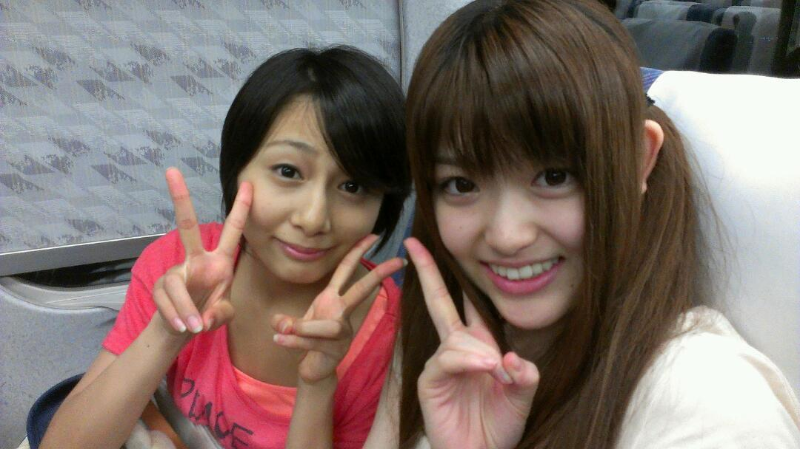

2012/0813Monよるあもたしあっ(o・・o)
こんばんごっっ(o・・o)
さゆりんごっっ(o・・o)
今日きてくださった皆さん！
ありがとうございましたー！
楽しかったー(´；ω；`)
やりきったー(´；ω；`)
ダンス間違えたー(´；ω；`)ぇ
久し振りに自己紹介をして
究極に照れました（つд<*)てへ
明日は照れないように
頑張ります(T-T)
さゆりんのキャッチフレーズ
一緒に言おなー(つд；*)
明日もよろしくお願いします！
色々な感想は
明日おわってからにします！
とりあえず
今日のみなさんは最高でした！
ほんまにありがとうございました！
怪我はありませんか？(^-^)
今日はゆっくり休んでなー＼(^-^)／
名古屋のみなさんも
一緒に盛り上がりましょう！
たのしむぞぃ！
そのためにダンス確認しときます(T-T)
明日は名古屋の前に
フジテレビのノンストップさんに
でます！
一旦、れなりんと東京に帰ります♪
良かったらみてください♪
ライブ終わりで
新幹線に飛び乗った
ぼろぼろな私たちです♪

みなさんの聞きたかった曲は
聞けたかな？
明日来られる皆さん
お楽しみにー＼(^-^)／
ほな、またねー(*^^*)
おつかれなりん♪
2012/08/13 23:00
コメント(499)
おつかれさまぁ
行きたかったよぉぉぉ
行きたかったよぉぉぉ
初ライブお疲れさま！！
楽しめたみたいだね！！
いやー行きたかった。。。
明日もふぁいてぃん！！！！
今日はお疲れさん(*^^*)
明日の名古屋もがんばって♪
お疲れ。そんな忙しいなら、早く休まなきゃね。
そんな中、ブログありがとう！！
そんな中、ブログありがとう！！
ライブお疲れ様でした(^O^)／
おつかれさまです！
LIVE行きたいなー(>_<)
東京でやったら絶対行くからー！
忙しい毎日だろうけどがんばってー♪( ´▽｀)
おつかれさま♪
今日は皆輝いていたよ！
皆のことをすごく好きになった！
やっぱりライブはいいね
すごい楽しい時間をありがとう♪
大阪の個別が楽しみ＼(^o^)／♪
明日も頑張ってくださいね♪
今日のライブ良かったです
次を楽しみにしてます！
次を楽しみにしてます！
さゆりんばんちゃ(^O^)／
ゆーたんなう
とりあえず初ライブお疲れちゃん(゜▽^*)
残念なのは乃木坂オリジナル以外もあったことかな(;^_^A
折角なんだから乃木坂Onlyでしょ
明日も慌しいけど頑張ってね(^ω^)
今日はゆっくり休んでね！
ぢゃぁ
ゆーたんなう
とりあえず初ライブお疲れちゃん(゜▽^*)
残念なのは乃木坂オリジナル以外もあったことかな(;^_^A
折角なんだから乃木坂Onlyでしょ
明日も慌しいけど頑張ってね(^ω^)
今日はゆっくり休んでね！
ぢゃぁ
やっほ～！
ライブ行けてないけどコメント失礼します……w
お疲れさま～☆
ただその一言が言いたかった！笑
初LIVEお疲れ様！！
LIVE後に東京に戻って生放送→名古屋とは(^◇^;)
大変だと思うけど頑張ってね！
明日名古屋LIVE行けるから楽しみだよー！！
キャッチフレーズももちろん言うからね(＾ｰ^)ノ
たかたかぽ。
LIVE後に東京に戻って生放送→名古屋とは(^◇^;)
大変だと思うけど頑張ってね！
明日名古屋LIVE行けるから楽しみだよー！！
キャッチフレーズももちろん言うからね(＾ｰ^)ノ
たかたかぽ。
やっほー
いわしだよー
いけなかった泣
明日もいけない泣
ああああああああ笑
頑張ってね！
じゃあね
いわし
こんばんさゆりん＼(^o^)／
今日のライブお疲れ様！
早く明日の名古屋が楽しみだ！
乃木坂のmixができたと聞いてテンションが高まるカッキーですな(*^^*)
明日はさゆりんのキャッチフレーズ叫ぶから声が届けばいいな⌒(ё)⌒
明日のパフォーマンス期待してるよ
ゆっくり休んでな(*^^*)
今日のライブお疲れ様！
早く明日の名古屋が楽しみだ！
乃木坂のmixができたと聞いてテンションが高まるカッキーですな(*^^*)
明日はさゆりんのキャッチフレーズ叫ぶから声が届けばいいな⌒(ё)⌒
明日のパフォーマンス期待してるよ
ゆっくり休んでな(*^^*)
さゆりん、こんばんは。
大忙しですね。
テレビ出てから即名古屋ですか。
すごい！
でも、体には気を付けてくださいね。
明日も、がんばってね。
大忙しですね。
テレビ出てから即名古屋ですか。
すごい！
でも、体には気を付けてくださいね。
明日も、がんばってね。
やっほー
お疲れさま。
行きたかった～
いろいろあったみたいだねww
そうゆー意味でもお疲れさま。
ノンストップみれない(ToT)
ちょうど部活の時間とかぶってみれないんよ～／(ToT)＼
明日頑張ってね！
また行けないけど…
じゃあね♪
お疲れさま。
行きたかった～
いろいろあったみたいだねww
そうゆー意味でもお疲れさま。
ノンストップみれない(ToT)
ちょうど部活の時間とかぶってみれないんよ～／(ToT)＼
明日頑張ってね！
また行けないけど…
じゃあね♪
ライブ超楽しかったよ！本当に最高でした！みんな超可愛かった(//▽//)
なぜ逆(笑)
りんご～明日絶対みるぜぇ(^-^)
さゆりん！ライブお疲れ様です(o^^o)
今日見にいけなかったけど、行った人たちのお話聞いたよ！
さゆりんがあまりに感極まって、泣いていたっていうのも聞きました。 今まで努力してきたことが出たのかな?
明日も行けないけど、精一杯出し切ってください！
連日の練習で大変で、体壊さないようにね！
名古屋楽しんできてよーー！
ゆかゆか
ライブおつかれ～♪
明日いけないけど、ノンストップはみるね！
設楽さんとの絡み楽しみww
明日いけないけど、ノンストップはみるね！
設楽さんとの絡み楽しみww
踊り間違えたんかい！
まっ楽しめたんなら
良いんじゃない？
明日はファンの皆に
さゆりんごパンチ(^з^)-☆
をお見舞いしてやれー
頑張って～
ともちん(･∀･)☆彡
まっ楽しめたんなら
良いんじゃない？
明日はファンの皆に
さゆりんごパンチ(^з^)-☆
をお見舞いしてやれー
頑張って～
ともちん(･∀･)☆彡
お疲れさま!
明日の名古屋いくでな!
楽しみやーい(*^o^*)
沸いたー！！
気付いたー？(*ﾟдﾟ*)
楽しかったー！！
明日も頑張ってい！！
気付いたー？(*ﾟдﾟ*)
楽しかったー！！
明日も頑張ってい！！
グッド イヴニんご。
初ライブお疲れ様！！
初ライブを地元でできて良かったねー！
みんな盛り上がって、たくさん楽しめたみたいだね！
ダンス、間違えちゃったんだ・・・笑
でも楽しければ関係ないよね！
明日は東京に戻ってまた名古屋なんて！！
すごいハードスケジュールだね・・。
今日も明日も大変だろうけど、さゆりんぱわー全開で頑張って！
俺はライブ行けないけどこっちから応援してるよ！
あ、17日と21日は行くからね！
ではでは、体調には気を付けて、明日のライブも楽しんで最高の思い出をつくってね！
さゆりんfight！！！
よかったよ！(^ ^)
色々課題もあるんだろうけど、
ライブ重ねるごとに成長できたらいいね(*｀へ´*)
とりあえず初ライブ
松村ちゃんめちゃくちゃ前で見れて
よかったです(￣▽￣)
色々課題もあるんだろうけど、
ライブ重ねるごとに成長できたらいいね(*｀へ´*)
とりあえず初ライブ
松村ちゃんめちゃくちゃ前で見れて
よかったです(￣▽￣)
まっちゅんやっほー(*￣∇￣)ノ
ライブめっちゃ楽しかった
頑張ってアピールしたけど気付いてくれたんかな？
聞きたかった曲も聞けたし
興奮しぱなしやわ
マナー悪いのがちらほらおったのが残念やけど大成功やろ！
明日の名古屋も沸くでー
全力でコールするわぁ
go fly～(笑)
ほなねﾉｼ
ライブめっちゃ楽しかった
頑張ってアピールしたけど気付いてくれたんかな？
聞きたかった曲も聞けたし
興奮しぱなしやわ
マナー悪いのがちらほらおったのが残念やけど大成功やろ！
明日の名古屋も沸くでー
全力でコールするわぁ
go fly～(笑)
ほなねﾉｼ
ライブ行ったよ(*^o^*)
ほんまに楽しかったO(≧∇≦)oさゆりんごが可愛すぎて生きてるのが辛いです、はい（笑）
感動して泣いてるメンバーを見てると、自分のことみたいに感動しちゃいました(T^T)
ほんまにありがとう！！！
ほんまに楽しかったO(≧∇≦)oさゆりんごが可愛すぎて生きてるのが辛いです、はい（笑）
感動して泣いてるメンバーを見てると、自分のことみたいに感動しちゃいました(T^T)
ほんまにありがとう！！！
おつかりんご

話を聞いてるとまあ盛り上がったみたいでなにより！^^
大阪→東京→名古屋とか多忙すぎてほんと芸能人ってすごいなと思います・・・
まだまださゆりんのキャッチフレーズは現役だから！ｗ
諦めないで！ｗ
明日はダンス間違えちゃいかんぜよ！？
また楽しんできてね
最後に
大阪桐蔭、甲子園初戦勝ったよ！！
話を聞いてるとまあ盛り上がったみたいでなにより！^^
大阪→東京→名古屋とか多忙すぎてほんと芸能人ってすごいなと思います・・・
まだまださゆりんのキャッチフレーズは現役だから！ｗ
諦めないで！ｗ
明日はダンス間違えちゃいかんぜよ！？
また楽しんできてね
最後に
大阪桐蔭、甲子園初戦勝ったよ！！
お疲れ！
俺は行けなかったけど
盛り上がったみたいだねっ
うらやましい～
行きたいよ～笑
さゆりんも
ケガとかに気をつけて
体調管理もしっかりしてねっ
MIXとかどんな感じか気になるよー
俺は行けなかったけど
盛り上がったみたいだねっ
うらやましい～
行きたいよ～笑
さゆりんも
ケガとかに気をつけて
体調管理もしっかりしてねっ
MIXとかどんな感じか気になるよー
さゆりんお疲れ
行きたかったよー(>__<)
明日のﾗｲｳﾞも楽しんでねー！
隊長より
こんばんごっ(o・・o)
おつりんごっ(o・・o)
まあ、来たかいはあったね。
曲数は正直もう少し少ないと思ってたし、後半もスタミナ切れとかそんなに見えんかったし。
まあ、色々思う部分があるんだけど、それは手紙に書くわ。
さゆりんというか、みんなに考えて欲しい部分があったんでね。
明日の方が体力的にしんどいだろうけど、頑張ってな。
わいは大阪一泊して、明日の昼、名古屋に向かいます
あと、さゆりんの名前、また間違ってたね。。。
おつりんごっ(o・・o)
まあ、来たかいはあったね。
曲数は正直もう少し少ないと思ってたし、後半もスタミナ切れとかそんなに見えんかったし。
まあ、色々思う部分があるんだけど、それは手紙に書くわ。
さゆりんというか、みんなに考えて欲しい部分があったんでね。
明日の方が体力的にしんどいだろうけど、頑張ってな。
わいは大阪一泊して、明日の昼、名古屋に向かいます
あと、さゆりんの名前、また間違ってたね。。。
大阪も名古屋も外れてしまったんで行けませんが、家で応援してます！
今日はほんまに最高やったで！！
.
聴きたかった曲も全部聴けたし☆彡
.
.
失いたくないから感動したぜ゜。(p>∧<q)。゜゜
.
あと、Beginnerも会いたかったもオーマイガーも聴けて嬉しかったな(*^ー^*)
.
.
アンコール必死やったで（笑）
．
明日も行くね♪
.
聴きたかった曲も全部聴けたし☆彡
.
.
失いたくないから感動したぜ゜。(p>∧<q)。゜゜
.
あと、Beginnerも会いたかったもオーマイガーも聴けて嬉しかったな(*^ー^*)
.
.
アンコール必死やったで（笑）
．
明日も行くね♪
まっちゅん！
お疲れ様！
ライブ最高に楽しかった！
NMBの時のまっちゅん、めっちゃ可愛かったわー。
残念ながら、明日は行かれへんけど頑張ってね！
松村お疲れ!!(^O^)
今日の松村めっさ楽しそうで こっちまで楽しくなったわ
明日わ墓参りで行けんけど 楽しんでな
九州に向かうバスの中からでした
ぢゃばね(^.^)
今日の松村めっさ楽しそうで こっちまで楽しくなったわ
明日わ墓参りで行けんけど 楽しんでな
九州に向かうバスの中からでした
ぢゃばね(^.^)
明日行くよー♪
楽しみにしてるから頑張ってね！(￣∇￣*)ゞ
ライブお疲れ様でした！
めっちゃ楽しくて、もー汗だくやわ！
今日はさゆりんの笑顔たーっぷりいただきました(笑)
途中泣いちゃってたね。実は俺も感動してうるっと来ました。
明日の名古屋もがんばってね！(^^)
めっちゃ楽しくて、もー汗だくやわ！
今日はさゆりんの笑顔たーっぷりいただきました(笑)
途中泣いちゃってたね。実は俺も感動してうるっと来ました。
明日の名古屋もがんばってね！(^^)
ライブお疲れ様
明日のフジテレビ見るよ
気をつけてね
明日のライブの成功を心より
お祈りしてます。
明日のフジテレビ見るよ
気をつけてね
明日のライブの成功を心より
お祈りしてます。
ライブお疲れ様です＼(^o^)／
めっちゃ楽しかった♪
さゆりんがファンに注意してくれて良かったです(^^)
言い難いけど、言わんと伝わらん事もあるもんね！
言ってくれてありがとう！！
明日もライブ頑張れー＼(^o^)／
めっちゃ楽しかった♪
さゆりんがファンに注意してくれて良かったです(^^)
言い難いけど、言わんと伝わらん事もあるもんね！
言ってくれてありがとう！！
明日もライブ頑張れー＼(^o^)／
こんばんはっー！！
大阪でのライブお疲れさまでした！！
いやー行きたかった＞＜
引き続き明日のライブもファイトです！！
今日は本当におつかれさまでした。
大阪でのライブお疲れさまでした！！
いやー行きたかった＞＜
引き続き明日のライブもファイトです！！
今日は本当におつかれさまでした。
さゆりん今日のライブめちゃくちゃ楽しかったよ～(*^^*)
明日もさゆりんに会いたいけど行けそうにないから次の個別絶対行くから待っとってね～
明日もさゆりんに会いたいけど行けそうにないから次の個別絶対行くから待っとってね～
こんばんは！
あのー…タイトル読みにくいデスっ(笑)何かの暗号かと思いましたよ！
ライブめっちゃ行きたかったです(T^T)
ダンス間違えちゃいましたか。まぁ、きにせえへんでもいいんちゃいますか～＼(^^)／
明日もライブですねっ！全力出しきっちゃってください。くれぐれもお身体に気を付けて。ちゃんと水分たっぷりんことるんですよー(^q^)
ちなみに、僕は乃木坂46の中で一番好きな曲は『おいシャン』ですかねー(*´∇｀*)おいシャン踊っとる時のさゆたんがカワユスですー
では、またです。(=｀ω´=)
あのー…タイトル読みにくいデスっ(笑)何かの暗号かと思いましたよ！
ライブめっちゃ行きたかったです(T^T)
ダンス間違えちゃいましたか。まぁ、きにせえへんでもいいんちゃいますか～＼(^^)／
明日もライブですねっ！全力出しきっちゃってください。くれぐれもお身体に気を付けて。ちゃんと水分たっぷりんことるんですよー(^q^)
ちなみに、僕は乃木坂46の中で一番好きな曲は『おいシャン』ですかねー(*´∇｀*)おいシャン踊っとる時のさゆたんがカワユスですー
では、またです。(=｀ω´=)
お疲れ様でした
今日行きましたよ
初めて生で乃木坂46を見て興奮しました
とても楽しかったで～す
明日も名古屋で頑張って下さい
応援しています
今日行きましたよ
初めて生で乃木坂46を見て興奮しました
とても楽しかったで～す
明日も名古屋で頑張って下さい
応援しています
さゆりんお疲れ( ´ ▽ ` )ﾉ
今日よかったんだね！！
あー見たかった！
明日も頑張って！！
残念ながら参加は出来ないけど
応援してます。
今日よかったんだね！！
あー見たかった！
明日も頑張って！！
残念ながら参加は出来ないけど
応援してます。
さゆそぉとぉかゎぃぃょ！
聞こえたかな？
今日は楽しかった＞＜
明日の名古屋チケ外れたからいけないの・・・。
残念だけど今日はいっぱい楽しめたからいいかなぁ？
聞きたい曲聴けなかった・・・。
偶然聞きたかったよ！
まぁ次の楽しみにおいておくね♪
あっ！今日誕生日プレゼント
持っていこうと思って忘れた・・・。
手紙だけ書いたから
受け取ってね？
初めての手紙♪
んじゃさゆ明日もがんばってねぇ♪
聞こえたかな？
今日は楽しかった＞＜
明日の名古屋チケ外れたからいけないの・・・。
残念だけど今日はいっぱい楽しめたからいいかなぁ？
聞きたい曲聴けなかった・・・。
偶然聞きたかったよ！
まぁ次の楽しみにおいておくね♪
あっ！今日誕生日プレゼント
持っていこうと思って忘れた・・・。
手紙だけ書いたから
受け取ってね？
初めての手紙♪
んじゃさゆ明日もがんばってねぇ♪
ライブお疲れさま！
さゆりんめっちゃダンス上手になってたやん！！
AKB48さんの歌とか予想外の事がいっぱい起こってびっくりしたよ(笑)
明日の為に体調しっかり整えてね♪
でも、ムリだけはしないでね！
れなりんとお仕事がんばってね！！
明日も、さゆりんごパワーでがんばりんご！！
さゆりんめっちゃダンス上手になってたやん！！
AKB48さんの歌とか予想外の事がいっぱい起こってびっくりしたよ(笑)
明日の為に体調しっかり整えてね♪
でも、ムリだけはしないでね！
れなりんとお仕事がんばってね！！
明日も、さゆりんごパワーでがんばりんご！！
松村さーん
大好き
大好き
お疲れ様でした。最高バンザイ＼(^o^)／
まだまだこれからも！ガンバ！
大阪のファン！これからも！
泣くなよ！
まだまだこれからも！ガンバ！
大阪のファン！これからも！
泣くなよ！
こんばんごっ！
ライブお疲れ様でした
見たかったけど、今東京なんよぉー
明日のノンストップどうやって出るのかと思いきや…
まさかの東京戻りとは！？
お台場は今日行ってきたばかりなのに(:_;)
タイミング悪っ
明日は、その後名古屋ライブ
大変でしょうが
さゆりんスマイルで頑張ってくださいね
ライブお疲れ様でした
見たかったけど、今東京なんよぉー
明日のノンストップどうやって出るのかと思いきや…
まさかの東京戻りとは！？
お台場は今日行ってきたばかりなのに(:_;)
タイミング悪っ
明日は、その後名古屋ライブ
大変でしょうが
さゆりんスマイルで頑張ってくださいね


サイリウム投げてる人がいるかぎりね(>_<)
残念だよ！
LIVEお疲れ様でした。ダンス間違えたの（笑）
あっ大阪桐蔭勝ったね！！！
れなりんの千葉は負けてしまったね、、、